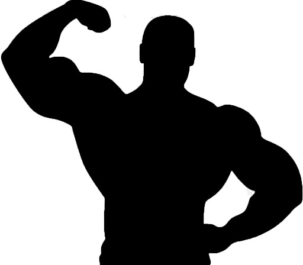

Welcome to Bodybuilding 101
What is bodybuilding?
Bodybuilding is the process of developing muscle fibers through the combination of weight training, increased caloric intake, and rest. In basic terms, lift heavy, eat well, and you can have a body that can be sculpted out of rock.
Bodybuilding is a sport where individuals workout to either look physically better or gain or lose weight. From a scientific standpoint, the goal of bodybuilding is to break muscle fibers in the muscles of the human body. The goal of this process is to rebuild those muscle fibers stronger than before. This is why people appear physically bigger after some time working out.
Bodybuilding Terms
Before you begin your bodybuilding journey, here are some important terms to know.
- Concentric
- Concentric refers to the muscle contraction during an exercise. The concentric phase of an exercise takes place when the muscle is shortening. Exercises such as the bicep curl are an example of a concentric movement. The conentric can also be called the "positive" part of the movement.
- DOMS
- Delayed Onset Muscle Sorness. This refers to the soreness felt after each workout. Note that being sore after a workout does not always mean that the workout was successfull
- Drop Set
- Drop Sets refer to the incremental dropping of weight of an exercise during a set. Usually, one would preform an exercise until failure, then immediately lower the weight, and finally begin the exercise until failure again.
- Eccenrtic
- Eccenrtic reffers to the stretch of the muscle when preforming a movement. When preforming a bicep curl, lower the weight back to rest position is the eccentric portion of the movement.
- Hypertrophy
- Hypertrophy referes to muscle building by the process of enlarging individual muscle fibers.
- One Rep Max
- One rep max or ORM refers to the maximum amount of weight you can lift for an exercise for exactly one rep. This is useful in determining how strong you are and how to structure the amount of weight you are going to pull during the workouts.
- Repetition (Reps)
- Reps refer to the number of times you lift the weight per set.
- Sets
- Sets are the number of times you preform the number of reps for each exercise.
- Super Set
- Super Sets are sets where two exercises are preformed during the same set with no rest in between.